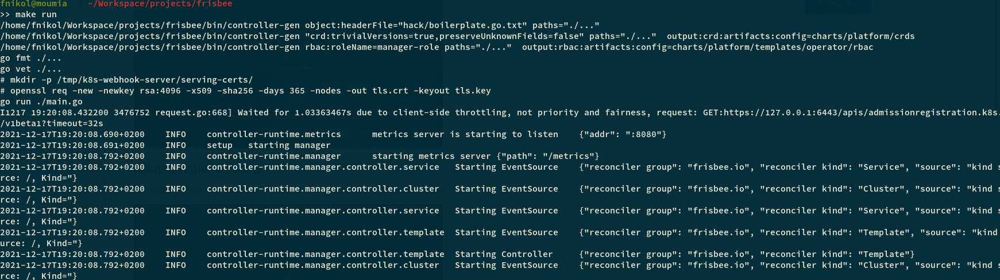

Guide for the Frisbee Platform Developers
Change the Code
# Fetch Frisbee
>> git clone git@github.com:CARV-ICS-FORTH/frisbee.git
>> cd frisbee
There are two ways to run a Frisbee controller.
- As Go program outside a cluster.
- As a container inside a Kubernetes cluster.
By default, Frisbee prefers the second way.
However, when debugging a few feature it is impractical to have to create and deploy the container all the time. In such cases, it is preferable to run the controller outside the cluster, as shown next.
Step 1:
Firstly, we have to inform the Helm chart responsible for handling the platform deployment to not include the controller.
# Remove the containerized controller from a running deployment
>> helm upgrade --install my-frisbee charts/platform/ --set operator.enabled=false \
--set global.ingress=platform.science-hangar.eu
Notice we the flag global.ingress . Set it accordingly to the Ingress in your cluster.
If you run Frisbee on a local cluster, simply omit the flag.
Step 2:
On the second step, we need to run the controller as a standalone binary.
# Run Frisbee controller outside a cluster (from Frisbee directory)
>> make run
This may take a while as it has to take download the Go dependencies and compile the binary.
If everything went fine, you should see something like the following.

Tip: Beware the different between
charts/platformandfrisbee/platform.
Given that we are under the Frisbee directory, the charts/platform points to the local copy of the chart, which is the
one we want to modify.
Otherwise, if frisbee/platform is used, Helm will use the released version of the repo.
Make a new release
Step 1: Change the version in the VERSION file
Step 2: Update the controller's container
If you have changes anything outside the charts folder, then you have probably modified some of the controller.
In this case, you have to rebuild the container and push it to the registry.
make docker-build IMG="yourImage"
Otherwise, you can use which will rebuild and automatically publish the container into the public Docker Hun registry, under the name icsforth / frisbee-operator
>> make docker push
Step 3: Update the Github repo
We have also automated the way to publish new releases in Github.
>> make release
This will commit and tag all the changes in the repo. However, it will push changes to the Github.
You have to do it manually using
>> git push --set-upstream origin && git push --tags
Step 4: Create GitHub release
-
Go to GitHub and create a pull request
-
Merge pull request
-
Delete branch
-
Go to GitHub Tags and create a new release for the latest tag
The previous must have triggered some GitHub Actions. Go to https://github.com/CARV-ICS-FORTH/frisbee/actions and check that is everything is successful.
Then go to the tags and create a new release for the latest tag.
Step 5: Validate release
The previous step have triggered the appropriate action for creating new charts.
To confirm that they have been actually created, you can use the helm tool to search the repo.
>> helm repo update
>> helm search repo frisbee
Then, you see that the latest Chart version is equal to the latest git tag, and in accordance to the VERSION file.